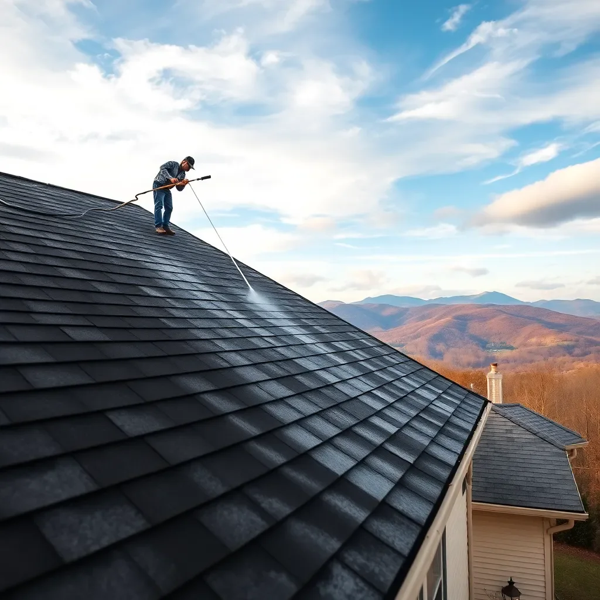

Soft Wash Roof Cleaning in Knoxville, TN
Safely remove black streaks, algae, moss, and lichen from your roof using the ARMA-recommended soft wash method — no high-pressure that damages shingles.

Those Black Streaks on Your Roof Aren't Just Dirt
If you see dark streaks running down your roof shingles — especially on north-facing or shaded sections — you're looking at Gloeocapsa Magma, a blue-green algae that thrives in the humid Tennessee climate. This algae feeds on the limestone filler in asphalt shingles, causing visible staining that spreads across the entire roof if left untreated.
Beyond aesthetics, algae accelerates shingle granule loss — those granules are your roof's UV protection and waterproofing layer. Homeowners with algae-covered roofs lose years off their roof's lifespan and often end up replacing roofs that could have been cleaned and extended significantly. In Knoxville's humidity, moss and lichen growth add to the problem, with lichen roots physically degrading shingle materials over time.
Soft Wash vs. Pressure Washing — Why It Matters
The critical distinction in roof cleaning is how you clean, not just what you clean off. High-pressure washing (1,500+ PSI) on asphalt shingles:
- Blasts granules off shingles, accelerating wear
- Forces water under shingle overlaps, causing leaks
- Voids most asphalt shingle manufacturer warranties
- Physically damages older shingles
Soft washing uses 60–200 PSI water — barely more than a garden hose — combined with professional cleaning solutions that kill algae, moss, and bacteria at the cellular level. The cleaning solution does the work; the water just rinses. This is the method recommended by the Asphalt Roofing Manufacturers Association (ARMA).
Our Roof Cleaning Process
- Preparation: We protect landscaping, close windows, and cover any sensitive surfaces near the roof's drip line.
- Solution application: A professional SH-based cleaning solution is applied to the entire roof surface, dwelling long enough to kill all organic growth.
- Low-pressure rinse: The roof is gently rinsed at soft wash pressure — no blasting, no damage.
- Moss removal: Any large moss clumps are carefully removed by hand before treatment.
- Result: Black streaks, green algae, and moss disappear. Most results are visible immediately; any remaining residue continues to fade over the next few weeks as the dead growth washes away with rain.
Roof Cleaning Pricing in Knoxville
- Ranch / single-story (up to 1,500 sq ft roof): $250–$380
- Two-story home (1,500–2,500 sq ft roof): $320–$480
- Large home or steep pitch: $400–$600+
- Roof + house wash combo: Bundle and save
Frequently Asked Questions
What causes black streaks on Knoxville roofs?
Black streaks on asphalt shingles are Gloeocapsa Magma — a blue-green algae that feeds on limestone filler in shingles. It thrives in humid climates like Knoxville's and spreads across north-facing or shaded roof areas. Left untreated, it accelerates granule loss and shortens roof life by years.
Is soft washing safe for asphalt shingles?
Yes. Soft washing is the ARMA-recommended cleaning method for asphalt shingles. It uses low pressure (60–200 PSI) and professional cleaning solutions to kill algae and moss without dislodging granules or voiding warranties. We never use pressure washers directly on roof surfaces.
How much does roof cleaning cost in Knoxville, TN?
Soft wash roof cleaning in Knoxville typically costs $250–$600 depending on roof size, pitch, and algae/moss severity. A standard ranch home runs $250–$380; larger two-story homes with steep pitches run $400–$600. Free estimates provided for all properties.
Protect Your Roof — Schedule a Soft Wash Today
Free estimates for all Knoxville-area properties. Don't let algae cut years off your roof's life.